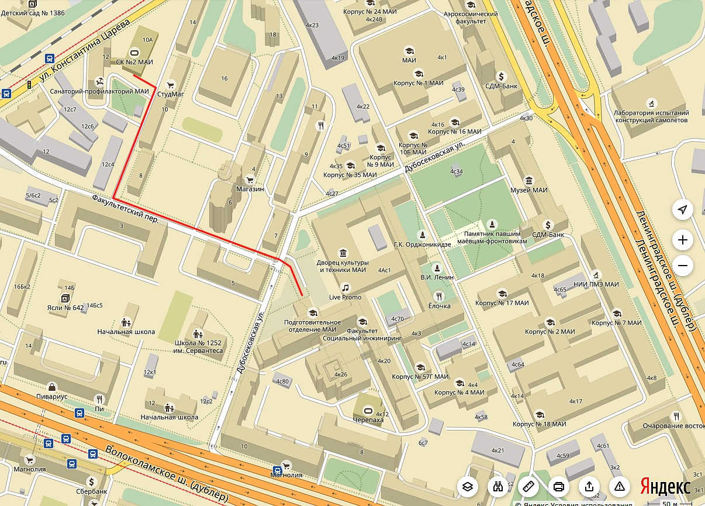
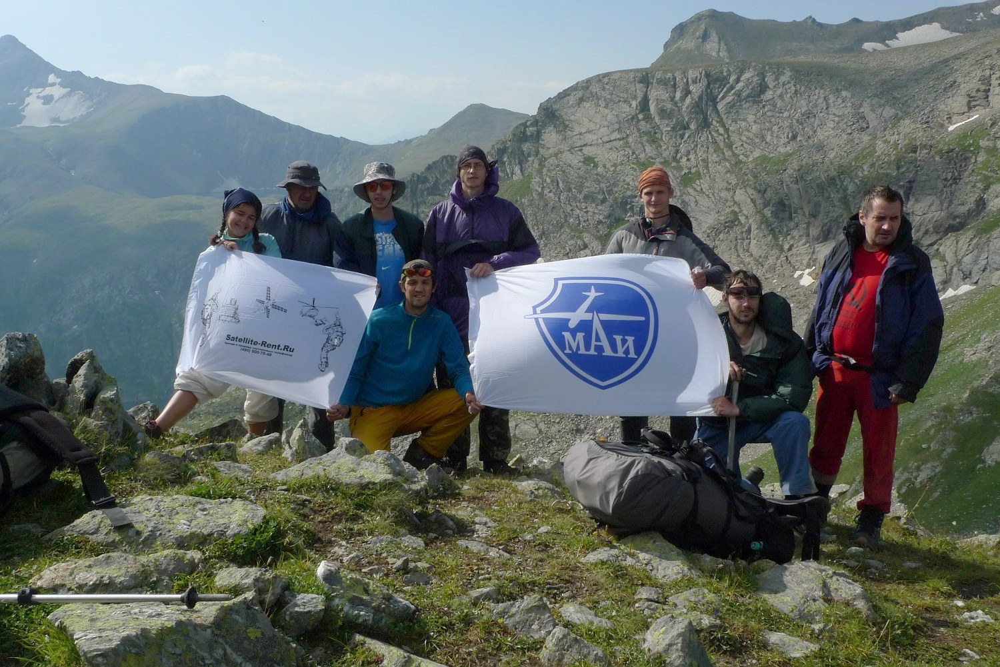
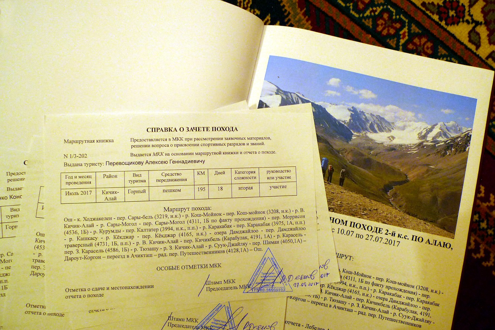
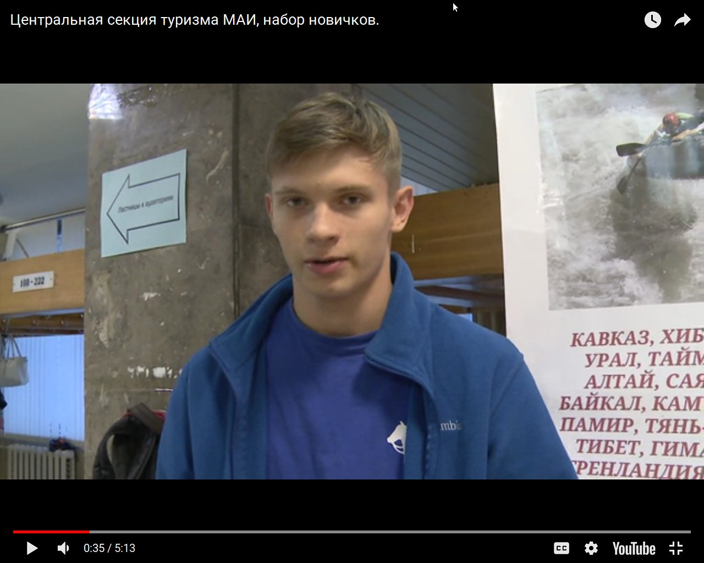
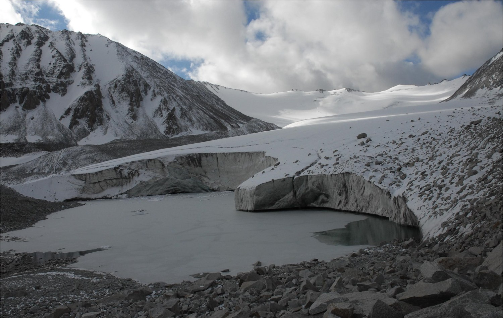
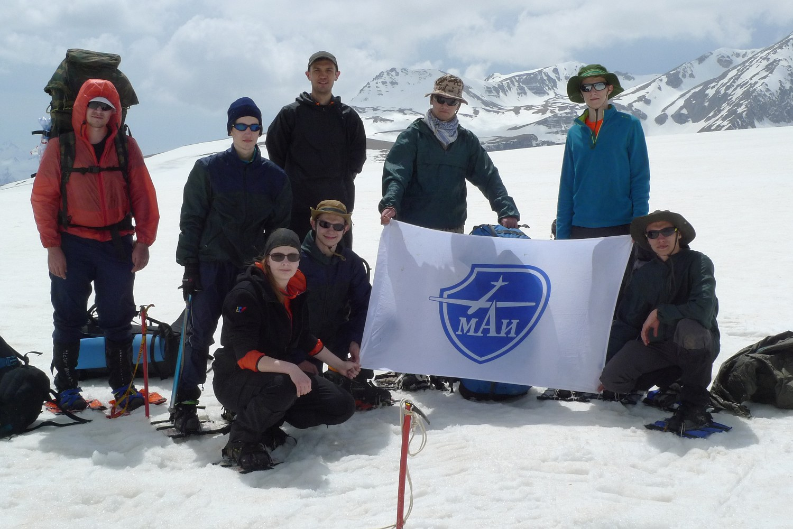
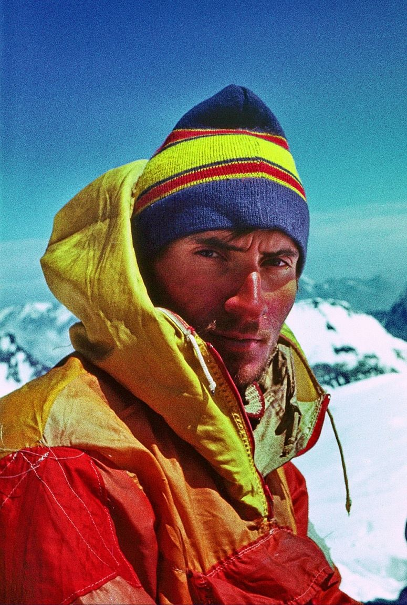
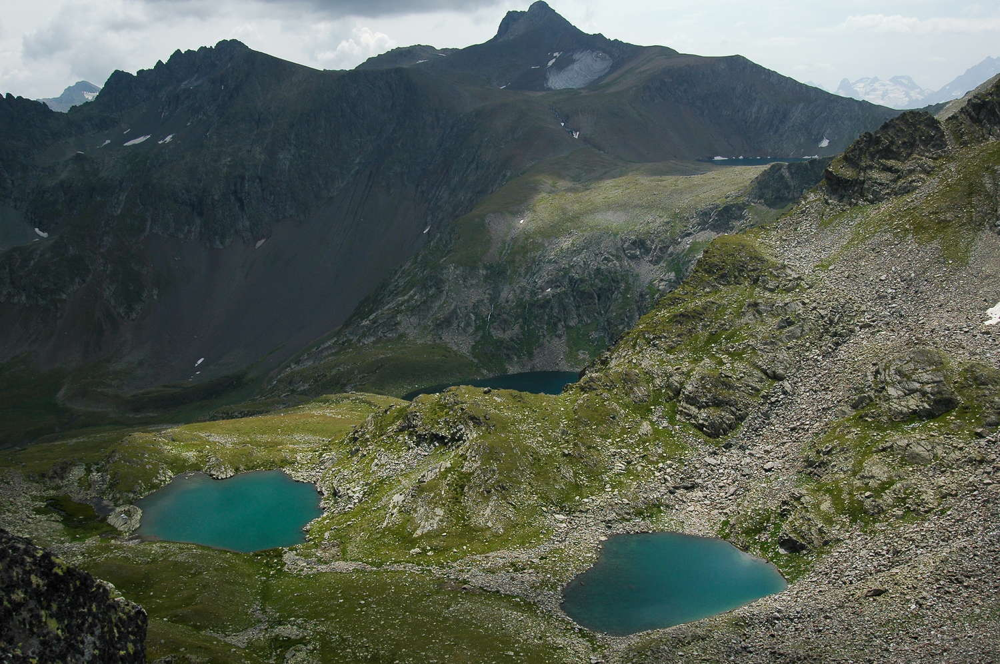
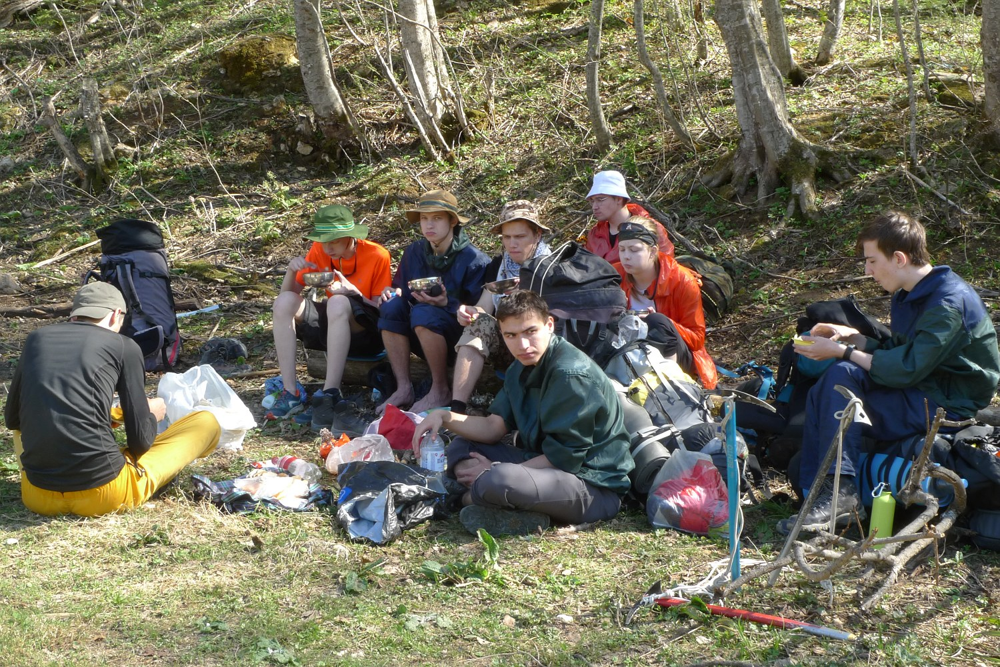

Тренировки начались с понедельника 02.10.2017. К пяти временным окнам, о которых было объявлено ранее, добавлено еще одно - по средам на первой паре. В результате, расписание тренировок стало таким:
Понедельник с 10.45 до 12.15
Понедельник с 16.30 до 18.00
Среда с 9.00 до 10.30
Среда с 16.30 до 18.00
Четверг с 16.30 до 18.00
Пятница с 10.45 до 12.15
Сбор у входа в спортивный комплекс МАИ за 10 минут до начала тренировки или сразу в раздевалке в подвальном этаже спортивного комплекса. Путь от ГУК МАИ до спортивного комплекса, расположенного по адресу ул. Царева д. 12, отмечен на прилагаемой схеме красной линией.
Автор: editor
2017-10-05 06:45:31.190213 UTC

В августе 2017 года группа Центральной секции туризма МАИ под руководством Сергея Стрыгина совершила горный поход 1-й категории сложности вдоль хребта Абишира-Ахуба (район Архыза, Западный Кавказ).
Нитка маршрута: р. Большая Лаба (Соленый мост) - урочище Соленое - пер. Сосновый (2175, н.к.) - р. Сосновая - радиально вершина 2910 (н.к.) - пер. Сосновый Загеданский (2674, н.к.) - р. Загеданка - пер. Бабочка (2586, 1А) - верховья р. Бол. Ажога - пер. Уруп-Ажога (2657, н.к.) - р. Ацгара - пер. Ацгара (2725, н.к.) - пер. Чилик (2913, 1А) - оз. Чилик - пер. Кынхара (2869, 1А) - оз. Кяфар – пер. Мылгвал (2823, 1А) - пер. Агур (2977, 1А) - р. Кяфар-Агур - пер. Архыз (2961,1А) - радиально вершина Джумарыклы-Тебе (3180) - пос. Архыз.
Состав команды: Васильева Мария, Дружинин Владимир, Зажигин Александр, Зажигин Анатолий, Лебедев Андрей, Пронин Дмитрий, Солертовский Иван, Стрыгин Сергей (рук.), Шичанин Константин.
Отчет о походе читайте по ЭТОЙ ССЫЛКЕ.
Автор: editor
2017-09-29 22:20:41.27962 UTC

Сегодня в МКК Федерации спортивного туризма Москвы состоялась защита июльского горного похода 2 к.с. по Алаю. Все девять справок подписаны. Поздравляем всех участников этого славного мероприятия! Отчет о походе смотрите ЗДЕСЬ.
Автор: editor
2017-09-27 21:31:28.468078 UTC
ТРЕНИРОВКИ ПО ОБЩЕЙ ФИЗИЧЕСКОЙ ПОДГОТОВКЕ
начинаются с понедельника 02.10.2017.
Расписание тренировок:
Понедельник с 10.45 до 12.15
Понедельник с 16.30 до 18.00
Среда с 16.30 до 18.00
Четверг с 16.30 до 18.00
Пятница с 10.45 до 12.15
Сбор у входа в спортивный комплекс МАИ за 10 минут до начала тренировки. Путь от ГУК МАИ до спортивного комплекса по адресу ул. Царева д. 12 отмечен на прилагаемой схеме красной линией.
Автор: editor
2017-09-27 10:17:43.555824 UTC

На Ютубе появилось 5-минутное видео, которое снял и смонтировал Владимир Бондарев.
Автор: editor
2017-09-14 05:10:38.092029 UTC

Летом 2016 года команда туристов МГТУ им. Н.Э. Баумана под руководством Сергея Ганаховского совершила интереснейший горный поход 4 к.с. по Алайскому хребту в районе Кичик-Алая. Туристы МАИ очень неравнодушны к этому горному району, последняя волна его освоения началась с наших походов конца 90-х - начала 2000-х годов. Достаточено посмотреть на нашем сайте летопись походов в районе Кичик-Алая или вот этот список отчетов.
Команде Сергея Ганаховского удалось пройти несколько интересных первопрохождений и вновь открыть один забытый, но принципиальный перевал в цирке с озерами Дамджайлоо.
А еще интересно то, что нитка маршрута бауманцев очень сильно коррелирует с маршрутом, который прошли туристы МАИ летом 2017 года. Полностью совпадают экскурсии в каньоне Ходжакелен, идентичен путь по южной тропе на перевал Сары-Бель. Оба маршрута проходили через озера Сарымогол, озера Дамджайлоо, ледник Кумтор, перевал Кёкджар... И это при том, что информация о походе группы Ганаховского дошла до нас лишь к лету 2017 года, когда маршрут туристов МАИ был уже сверстан. Отчет читайте по ЭТОЙ ССЫЛКЕ.
Спасибо Сергею за предоставленные материалы!
Автор: editor
2017-09-13 21:16:39.419926 UTC

Записаться в секцию можно ежедневно с понедельника по пятницу с 14:45 до 16:30 (4-я пара) в МАИ, корпус 3, комната 425 . Если это время неудобно, то звоните +7926-626-4754, и мы организуем встречу в удобное для вас время.
Зачеты ставим, разряды оформляем, тренировки проводим, в ПВД ходим и чаи гоняем. Приходите, спрашивайте, записывайтесь.
Ждем тебя на вершине!
Автор: editor
2017-09-04 08:22:04.747896 UTC

Ушел из жизни выдающийся спортсмен-турист, общественник, организатор туристического движения МАИ Сергей Стрыгин, чемпион России 2001 года по лыжным походам, Снежный Барс, руководитель походов высшей категории сложности в трёх видах туризма: горном, лыжном и водном.
Сегодня утром звонил Толя Зажигин, сказал, что Серега будет, наверно, выписываться из больницы, дескать, что ему там делать в субботу и воскресенье... Вчера он был здоровый, веселый, да и позавчера тоже.
Сергей очень много сделал для секции туризма МАИ, был её председателем, потом председателем МКК, много лет занимался организацией слетов туристов МАИ, был историографом секции.
Еще вчера, лежа в больнице, он беспокоился перед приёмом новичков о стенде секции в 3-м корпусе МАИ, прислал по e-mail фотографии сплава по р. Тумча и был очень рад, когда узнал, что макет обновленного стенда уже готов.
Ушел из жизни непримиримый борец с ложью, с несправедливостью, человек, всегда готовый помочь ближнему. День отъезда в свой последний поход он провел в инвалидном доме у Сергея Бездитко. Поздно вечером 31 августа его разбудил крик соседа по палате. Сергей вскочил с постели и бросился помогать. И тут случился сердечный приступ....
Соболезнования родным, друзьям...
Нам всем его будет очень не хватать.
ПРОЩАНИЕ СОСТОИТСЯ 3 сентября (воскресенье) в 12.00 в морге Митинского кладбища (6-й километр Пятницкого шоссе).
Автор: editor
2017-09-01 12:18:03.442183 UTC

ВКонтакте на странице Центральной секции туризма МАИ выложен альбом фотографий из горного похода 1 к.с. в районе Архыза в августе 2017 года. К альбому можно перейти по ССЫЛКЕ.
Автор: editor
2017-08-30 07:49:13.570651 UTC

Спасибо Алине за отличную работу! Видео можно посмотреть ЗДЕСЬ. А для тех, кто интересуется пройденным маршрутом, даем ссылку на ОТЧЕТ О ПОХОДЕ.
Автор: editor
2017-08-30 06:59:02.152447 UTC
{kind=link}
{kind=link}
{kind=link}